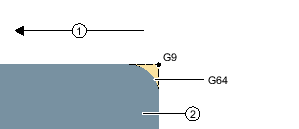

After you have created a new contour and specified the starting point, you can define the individual elements that make up the contour.
The following contour elements are available for the definition of a contour:
Straight vertical line
Straight horizontal line
Straight diagonal line
Circle/arc
For each contour element, you must parameterize a separate parameter screen. Parameter entry is supported by various help screens that explain these parameters.
If you leave certain fields blank, the cycle assumes that the values are unknown and attempts to calculate them from other parameters.
Conflicts may result if you enter more parameters than are absolutely necessary for a contour. In such a case, try entering less parameters and allowing the cycle to calculate as many parameters as possible.
As transition element between two contour elements, you can select a radius or a chamfer or, in the case of linear contour elements, an undercut. The transition element is always attached at the end of a contour element. The contour transition element is selected in the parameter screen of the respective contour element.
You can use a contour transition element whenever there is an intersection between two successive elements which can be calculated from the input values. Otherwise you must use the straight/circle contour elements.
You can enter additional commands in the form of G code for each contour element. You can enter the additional commands (max. 40 characters) in the extended parameter screens ("All parameters" softkey).
You can program feedrates and M commands, for example, using additional G-code commands. However, make sure that the additional commands do not collide with the generated G code of the contour. Therefore, do not use any G-code commands of group 1 (G0, G1, G2, G3), no coordinates in the plane and no G-code commands that have to be programmed in a separate block.
The following additional functions are available for programming a contour:
Tangent to preceding element
You can program the transition to the preceding element as tangent.
Dialog box selection
If two different possible contours result from the parameters entered thus far, one of the options must be selected.
Close contour
From the current position, you can close the contour with a straight line to the starting point.
The continuous path mode (G64) is used. This means, that contour transitions such as corners, chamfers or radii may not be machined precisely.
If you wish to avoid this, there are two different options when programming. Use the additional programs or program the special feedrate for the transition element.
Additional command
For a contour, first program the vertical straight line and then enter "G9" (non-modal exact stop) for the additional command parameter. Then program the horizontal straight line. The corner will be machined exactly, since the feedrate at the end of the vertical straight line is briefly zero.
① | Machining direction |
② | Workpiece |
Feedrate, transition element
If you have chosen a chamfer or a radius as the transition element, enter a reduced feedrate in the "FRC" parameter. The slower machining rate means that the transition element is machined more accurately.
See also:
Contour turning - general